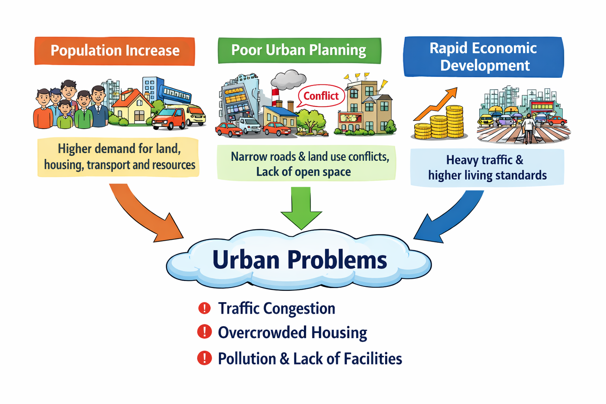

Hong Kong's physical geography sets the stage for urban problems:
However, the main causes are human:
| Effect | Explanation |
|---|---|
| High housing demand | 7.5M+ population (natural increase + immigration) → shortage, subdivided flats, long waiting times |
| High population density | Mong Kok > 130,000 persons/km² — world's densest; strains all infrastructure |
| More vehicles | More people → more cars → traffic congestion |
| More waste | Higher consumption → landfills filling up faster |
| Higher energy use | More electricity, more vehicles → air pollution, light pollution |
| Effect | Explanation |
|---|---|
| Historical lack of planning | Early colonial development lacked comprehensive zoning → mixed industrial-residential use |
| Land use conflicts | No separation of factories, homes, and shops → safety hazards, noise, odour |
| Inadequate transport network | Roads not designed for today's vehicle numbers → chronic congestion |
| Insufficient open space | Old districts lack parks, playgrounds, recreational areas |
| No density controls | Older areas allowed very high building density → overcrowding, poor ventilation and lighting |
| Strata-title system | Makes redevelopment difficult because 80–90% owner consent is required → urban decay persists |
| Effect | Explanation |
|---|---|
| High land prices | Hong Kong as a global financial centre → commercial land outbids residential → housing pushed to small, old flats |
| Rising affluence | More private car ownership → congestion; more consumption → more waste |
| Past industrialization | Legacy pollution in air (factory emissions), land (industrial waste), water (untreated discharge) |
| Profit from subdividing | High land value incentivizes landlords to subdivide flats → poor living environment |
| Construction boom | Infrastructure and redevelopment projects → noise pollution, dust, construction waste |
| Tourism growth | Short-term rentals reduce housing supply; more visitors strain transport and waste systems |